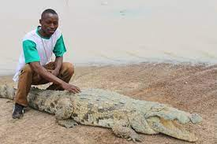
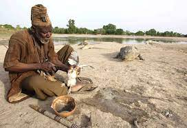
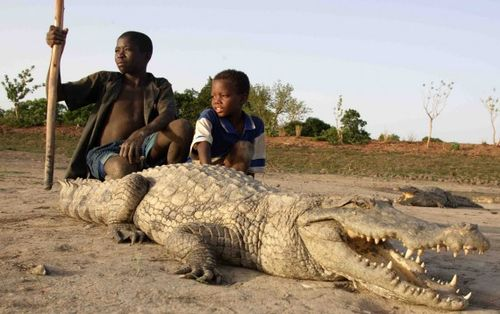
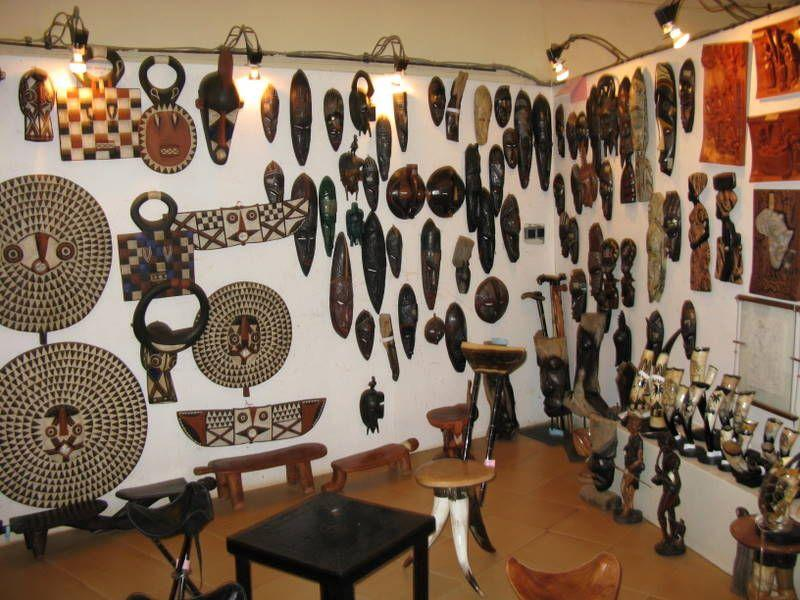
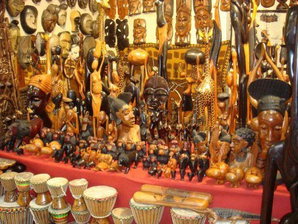
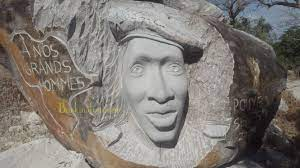

Ils sont regroupés principalement dans le nord du pays, en zone sahélienne, ce sont des nomades mais beaucoup ont commencé à se sédentariser près de points d'eau. L’habitat lui-même est en secco (paille) soutenu par des branches de bois. Le sol est tapissé de sable conformément au milieu culturel des peulhs. Sur les principes de l’habitat peul, il y a lieu de relever que les peuls comme les Touaregs sont un peuple nomade. L’habitat est donc sommaire, précaire et constitue même s’il est unique tout l’univers de la communauté, laquelle est en générale très réduite. La case est donc tout l’univers de la vie communautaire des peulhs. Il y a d’abord le lit pour le séjour ; celui-ci est à étage et toute la communauté doit pouvoir y vivre. Au bas étage, c’est pour le père et la mère. L’étage est réservé aux enfants. La partie réservée au père et à la mère est tapissée de nattes richement décorées ; dans ce milieu il n’y a pas de matelas. Plus un homme aime sa femme, plus il y a de nattes. La case (l’habitat peulh) constitue par ailleurs en même temps la cuisine. On remarquera le foyer de cuisine à droite à l’entrée ainsi que les différents ustensiles nécessaires. La case peulh (l’habitat peulh) constitue également le lieu de travail particulièrement de la femme. Ainsi il existe tous les éléments pour traire les vaches de lait quotidien et la confection de beurre. Il est ainsi des gobelets en bois et plusieurs récipients pour ce mode de travail. La case peulh (l’habitat peulh) constitue aussi le centre commercial. C’est ainsi qu’il y a plus de 75 calebasses, gourdes, vans pour le commerce lié à la vie des peuls.
A cheval entre Kaya et Dori, Baní (60 km de Dori) est admirable avec ses mosquées. Baní est la ville aux sept mosquées construites par El hadj Mohamed. Sept mosquées sont érigées sur la colline et représentent une personne en prière vue du ciel. Tant de mosquées, si peu d'habitants, cela prouve la passion mystérieuse de la ville. Du site où sont construites les 7 mosquées aux matériaux ayant servi à leur élévation en passant par les figures rupestres de décoration, sens et signification sont les maître-mots. Ces mosquées sont élevées sur les collines environnantes, toutes dirigées dans le sens de la grande mosquée, située à un niveau plus bas. Selon le fondateur de ces mosquées, El Hadj Mohamed a passé 40 ans dans la brousse et a construit ces mosquées sans aucun plan de construction préalable. Mieux encore, le "saint" les a construits, grâce à sa connaissance autodidacte du Coran. Alors, les petites mosquées sur les collines édifiées selon la position d’un homme en prière sont disposées sur les compartiments du corps humain. Une, dans chaque paume de la main, une sur chacune des deux épaules, une autre sur le cou et deux sur chaque pied. A l’intérieur, le sol a été battu et damé sans ciment mais le lieu est propice à l’adoration et à la prière. L'énergie consommée pour fabriquer les briques fut énorme. Le maintien de la Terre Sainte peut demander beaucoup de travail. Lorsque vous aurez terminé votre visite à la Grande Mosquée, vous remarquerez que c'est le centre du monde, et il ne fait aucun doute qu'un missionnaire vous fournira un dépliant vous expliquant que le seul vrai prophète est né à Baní et que la nouvelle de Baní doit être annoncée au monde.
Parmi les sites touristiques au Burkina Faso, le lieu le plus attractif pour les touristes est le village de Tiébélé, une commune rurale située dans la province du Nahouri dans la région du centre-sud. Les Kasséna appartiennent à l’ethnie Gourounsi. Dans le village de Tiébélé, les habitations ont conservé leur architecture traditionnelle au detriment des villages envirronnants qui se sont laissé dominer et séduire par la modernité au détriment de leur richesse. Dans le pays de Kasséna, on peut trouver trois types de maisons. La maison authentique se compose de 2 pièces, d'une cuisine intérieure et d'une chambre. Pendant la guerre tribale, leurs ancêtres ont utilisé ce type maison pour se défendre parce que c'était les toutes premières maisons dans lesquelles ils vivaient lorsqu'ils s'y sont installés. Mais maintenant, comme il n'y a plus de guerre, cette maison est toujours la résidence des grands-parents.En effet, les grands-parents et petits-enfants doivent vivre dans cette maison, car dans le village de Kassena, on dit que l'éducation des jeunes filles doit être à la charge des grands-parents. En outre, la maison authentique représente l’architecture typique originale des Kasséna parce que c’est une forme que vous ne pouvez voir nulle part ailleurs dans au Burkina Faso parce qu’elle est composée de 2 pièces de telle sorte que les 2 salles jointes forment le chiffre 8 d’où son nom la ‘’ maison en forme de 8 ‘’. Ces maisons peuvent durer un siècle ou plus. Pour rappel, la famille royale s'y installe dans les années 1600 ". La deuxième forme de maison est la maison rectangulaire ou généralement « carrée ». Cette maison est réservée pour les jeunes couples. Par exemple, lorsqu'un jeune homme se marie dans le pays de Kassena, une maison rectangulaire doit être construite pour lui et il vivra avec sa nouvelle épouse. La troisième forme de la maison est la maison ronde avec un toît en herbe. C'est une cabane où vit un homme célibataire. En revanche, les jeunes filles célibataires vivent avec leurs grands-parents dans une maison authentique jusqu'à ce qu'elles se marient.
>>> QUELQUES SITES TOURISTIQUES DU CENTRE
- MARES AUX CROCODILES SACRES DE SABOU   
- MARE AUX HIPPOPOTAMES DE ZENGHO
- VILLAGE ARTISANAL DU SIAO ET LA SCULPTURE SUR GRANIT DE LAONGO   
- Le Village Artisanal de Ouagadougou, dernier né des espaces de création, de production et de vente, est venu combler ce vide en créant une structure moderne qui représente et commercialise de façon permanente l’artisanat burkinabé.
Situé à côté du SIAO, le Village Artisanal rassemble plus de 500 artisans parmi les meilleurs du Burkina, répartis dans 25 métiers. Convivial et aéré, le site compte près de 50 ateliers installés dans des bâtiments de couleur ocre, construits en éventail autour d’une place avec son bar.
Historique
Le Village Artisanal de Ouagadougou est le fruit de la coopération entre le Burkina Faso et le Grand-Duché de Luxembourg. Il a été inauguré le 28 octobre 2000. Cet audacieux projet est piloté con- jointement par la Chambre de Commerce, d’Industrie et d’Artisanat du Burkina Faso et l’Agence luxembourgeoise pour la Coopération au Développement, Lux-Développent. La conception architecturale est l’œuvre du Cabinet d’Ingénierie, Design et d’Architecture, IDA. Les travaux de construction ont démarré en juin 1998 pour être achevés en septembre 1999. Les premiers artisans se sont installés à partir de janvier 2000 et l’ouverture du Village Artisanal au public a eu lieu le 15 mars 2000. Les artisans qui travaillent sur le site sont regroupés en huit corporations professionnelles, associées dans un Groupement d’Intérêt Economique (GIE) commun, reconnu et légalisé depuis juillet 2000. - Les sculptures sur granit de Laongo, à quelques kilomètres de Ouagadougou, sont une représentation particulière de l’art au Burkina Faso. C’est à Laongo, en mettant à profit un affleurement granitique que des artistes sculpteurs africains et mondiaux ont créé ce musée à ciel ouvert. Pour découvrir les sculptures de Laongo, vous devrez vous rendre à 35 km à l’est de Ouagadougou, non loin de Ziniaré ; vous pouvez vous offrir un détour dans un jardin de sculptures sur Granit. L’endroit a conservé son côté un peu sauvage mais la qualité artistique est vraiment au rendez-vous. En 1988, les artistes du Comité national des arts plastiques du Burkina Faso soumettaient au secrétariat d’Etat à la Culture un projet de manifestation internationale de sculpture sur granite sur le très beau site naturel de Laongo. Assez rapidement (car le contexte s’y prêtait, le gouvernement étant favorable aux initiatives visant à développer les arts du pays), le projet fut accepté. C’est ainsi qu’est né le site des sculptures en plein air de Laongo et le Sympo-granit 89 qui accueillit les premiers 18 artistes-sculpteurs renommés venus de 13 pays d’Afrique, d’Asie, d’Europe et d’Amérique. Parmi les participants burkinabè : Siriki Ky (l'initiateur du projet), Goudou Sayouba Bambara, Guy Compaoré et Ali Nikiema. A la suite de ce premier symposium et du succès créatif de ses artistes, d’autres symposiums nationaux ou internationaux suivront en 1991, 1996, 1998, 2001 et 2003. C’est ainsi que le site est devenu aujourd’hui un véritable musée à ciel ouvert où des œuvres de grande qualité, anthropomorphes, zoomorphes, figuratives ou abstraites, mais toujours intégrées à la beauté naturelle du site, s’offrent à l’admiration des visiteurs. Aujourd’hui, une soixantaine d’artistes se sont exprimés sur le granite de Laongo, certains ayant signé plusieurs œuvres lors de leurs différentes participations.
Sabou est département du Burkina Faso située dans la province du Boulkiemdé et dans la région Centre-Ouest. En 2006, le dernier recensement comptabilise 45877 habitants.
Les crocodiles sacrés de Sabou, ils sont plus d’une centaine et vivent dans une mare depuis des siècles au côté Nord de Sabou. Pour avoir sauvé la vie de leur ancêtre chasseur, les descendants de la famille KABORE et tout le village de SABOU avec, vénèrent ces crocodiles.
Ces crocodiles représentent les âmes des descendent de la famille KABORE à SABOU
, affirme Kuilga Kaboré, le guide depuis 1989. Aujourd’hui ces autres habitants
de SABOU constituent une véritable attraction touristique. Au bord de la mare, un poulet suffit à les faire sortir de l’eau pour une partie de photos. Il est possible de poser à côté d’un crocodile ou de soulever sa queue sans aucun risque. Les crocodiles sont bien protégés
Le site se trouve dans la province de Houet, à environ 60 kilomètres au nord de la ville de Bobo Dioulasso. La réserve présente une grande diversité de paysages et d’habitats. Le site est célèbre pour les hippopotames qui résident en permanence dans la mare qui a donné son nom au site ; il y a aussi d’autres mammifères comme l’éléphant, le phacochère, le guib harnaché Tragelaphus scriptus et l’antilope rouanne Hippotragus equinus. Les résidents locaux font la cueillette de fruits comestibles, de feuilles et de champignons dans le site et ramassent le bois mort, les écorces et les racines de diverses plantes à des fins médicinales. La réserve possède aussi des plantes mellifères qui entretiennent une apiculture rémunératrice. Le site est considéré comme une source sacrée de protection et d’abondance par les communautés locales qui pratiquent des rites pour se protéger du malheur ainsi que pour garantir la paix, la santé et de bonnes pluies. Les communautés évitent aussi toute action pouvant compromettre l’intégrité du site.